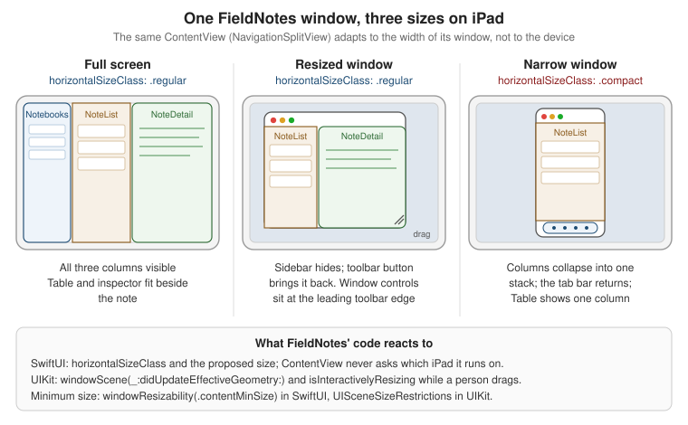

iPadOS: Windows, Multitasking, Pointer and Apple Pencil
|
This content was generated with the assistance of AI and should be verified against the official documentation before being relied on in production; see the section bibliography for the reference material consulted while preparing these pages. |
An iPad is not a big iPhone. The same device is used handheld with a finger, propped on a stand with an Apple
Pencil, or docked to a Magic Keyboard with a trackpad and an external display, often with several apps' windows
side by side. Since iPadOS 26 every app that supports multitasking can be resized freely into a floating window,
iPad has a real menu bar, and the pointer has a precise new shape. This page turns FieldNotes into a
desktop-class iPad app with that baseline in mind: iOS, iPadOS, macOS, watchOS and visionOS 27, Xcode 27 and
Swift 6.4, with a deployment minimum of 26. Anything that exists only in the 27 SDKs is labelled and guarded with
if #available.
Most of what the iPad needs is already in place from earlier pages. ContentView is a three-column
NavigationSplitView (Navigation and Presentation),
layouts adapt to size classes (SwiftUI Layout), and every window is a scene
with its own life cycle (App Structure and Life Cycle (SwiftUI,
UIKit, AppKit)). This page adds what makes the iPad app feel native on a large, multi-input device:
-
a second window type,
NoteWindow, so a person can keep several notes open side by side; -
FieldNotesCommands, the menu bar and keyboard shortcuts shared with the Mac; -
pointer and Pencil support, including
NoteSketchView, a PencilKit canvas for field sketches.
The design guidance behind these choices is summarized in Human Interface Guidelines in Practice; the full reference is the HIG’s Designing for iPadOS page.
Scenes, Sessions and Windows
On iPad the unit of user interface is the scene, not the app. One FieldNotes process can show several scenes
at once: two main windows on different notebooks, a note in a window of its own, and a third window on an external
display. Each scene is a UIWindowScene with its own UIWindow, its own foreground/background state and its own
restoration data. Behind each scene sits a UISceneSession, the system’s persistent record of that window. When
the system reclaims memory it can disconnect a background scene, destroying the UIWindowScene and its views,
but it keeps the session, so the window reappears in the app switcher and is rebuilt when the person returns to it.
Only when the person closes the window does the session go away.
Figure: One process, many window scenes
AppServices.shared.store: one NoteStore"] end subgraph SA["UISceneSession A (windowApplication)"] A1["UIWindowScene: main WindowGroup
ContentView, notebook Birds"] end subgraph SB["UISceneSession B (windowApplication)"] B1["UIWindowScene: main WindowGroup
ContentView, notebook Plants"] end subgraph SC["UISceneSession C (windowApplication)"] C1["UIWindowScene: WindowGroup id note
NoteWindow for one Note.ID"] end subgraph SD["UISceneSession D (disconnected)"] D1["No scene in memory
restoration data kept by the system"] end App --> A1 App --> B1 App --> C1 App -. rebuilt when the person returns .-> D1 A1 -- "openWindow(id: note, value: id)" --> C1
Every scene reads and writes the same NoteStore, because AppServices owns it for the whole process (see
Background Execution) and each scene injects it with
.environment(store). Per-window state, such as which notebook a main window shows, lives in @SceneStorage, so
windows A and B above restore their own selections independently.
Opting in to multiple scenes
An iPad app shows several windows only if its Info.plist sets UIApplicationSupportsMultipleScenes to true
inside the scene manifest. A new SwiftUI project generates the manifest from the build settings and turns the flag on
(Application Scene Manifest > Enable Multiple Windows in the target’s Info tab). FieldNotes keeps it explicit:
<!-- FieldNotes/Info.plist (excerpt) -->
<key>UIApplicationSceneManifest</key>
<dict>
<key>UIApplicationSupportsMultipleScenes</key>
<true/>
</dict>Without the key, the app still gets a resizable window on iPadOS 26 and 27, but only one. The older opt-out,
UIRequiresFullScreen, is deprecated since iPadOS 26: an app that still sets it is run in a compatibility mode
rather than excluded from multitasking. Apps built with the iOS 27 SDK also stop being treated as fixed-size just
because UISupportedInterfaceOrientations omits an orientation; the iOS & iPadOS 27 release notes state that
supported orientations are no longer a condition for continuous resizing. Design every screen for any width.
See Apple Developer Documentation — UIRequiresFullScreen and Apple Developer Documentation — iOS & iPadOS 27 Release Notes.
Two related rules come with the 27 SDK and apply to an app from the moment it is built with that SDK: UIKit apps
must adopt the scene-based life cycle or they fail to launch (covered on
App Structure and Life Cycle (SwiftUI, UIKit, AppKit)), and
iOS and iPadOS apps must include a launch screen key in Info.plist. As of 24 September 2026 the App Store
requires Xcode 26 and the 26 SDKs for uploads (in force since 28 April 2026). From April 2027, iOS and iPadOS apps
must be built with the iOS 27 and iPadOS 27 SDKs or later, as announced on 9 September 2026 (the date is not yet on
the Upcoming Requirements page); see
Upcoming Requirements and Deadlines
for the full list.
A window per note with WindowGroup(id:for:)
The HIG’s advice for iPadOS 26 and later is additive windowing: opening a second document creates a second window
instead of replacing what the first one shows. For FieldNotes the "document" is a note, so the app gets a second
window group that presents one note, identified by its Note.ID:
// FieldNotes/FieldNotesApp.swift (excerpt: the note window group and the menu bar commands)
import SwiftUI
import FieldNotesModel
import FieldNotesServices
@main
struct FieldNotesApp: App {
@State private var store = AppServices.shared.store // the single owner, see Background Execution
var body: some Scene {
WindowGroup {
ContentView()
.environment(store)
}
.commands {
FieldNotesCommands(store: store) // defined below; shared with the Mac
SidebarCommands()
InspectorCommands()
}
.defaultAppStorage(.fieldNotesShared) // as on Preferences, Files and Document-Based Apps
WindowGroup(id: "note", for: Note.ID.self) { $noteID in
NoteWindow(noteID: noteID)
.environment(store)
}
.defaultAppStorage(.fieldNotesShared)
.defaultSize(width: 640, height: 720)
.windowResizability(.contentMinSize) // the minimum comes from NoteWindow's frame
}
}The value type must be Codable and Hashable, because the system stores it with the scene session and hands it
back when it rebuilds a disconnected window; Note.ID is a UUID, which is both. The closure receives a
Binding<Note.ID?>, which is nil only if the window was opened without a value. NoteWindow is the app-target
view for that window:
// FieldNotes/Windows/NoteWindow.swift
import SwiftUI
import FieldNotesModel
import FieldNotesServices
import FieldNotesUI
/// One note in a window of its own, opened with `openWindow(id: "note", value: note.id)`.
struct NoteWindow: View {
@Environment(NoteStore.self) private var store
let noteID: Note.ID?
@State private var showsInspector = false
private var note: Note? {
store.notes.first { $0.id == noteID }
}
var body: some View {
if let note {
NavigationStack {
NoteDetail(note: note) // publishes focusedSceneValue(\.selectedNote, note)
.navigationTitle(note.title) // names the window in the app's window list
#if os(visionOS)
.sheet(isPresented: $showsInspector) { // no inspector on visionOS: the same details in a sheet
NavigationStack {
NoteMetadataInspector(note: note)
.navigationTitle("Info")
.toolbar {
ToolbarItem(placement: .confirmationAction) {
Button("Done") { showsInspector = false }
}
}
}
}
#else
.inspector(isPresented: $showsInspector) {
NoteMetadataInspector(note: note)
.inspectorColumnWidth(min: 220, ideal: 260, max: 340)
}
#endif
.toolbar {
Button("Info", systemImage: "info.circle") { showsInspector.toggle() }
}
}
.frame(minWidth: 420, minHeight: 360)
} else {
ContentUnavailableView("Note Not Found", systemImage: "note.text",
description: Text("It may have been deleted in another window."))
}
}
}See Apple Developer Documentation — PresentedWindowContent and Apple Developer Documentation -- sheet(isPresented:onDismiss:content:).
A few details carry a lot of weight here:
-
The window reads the note by ID from the store, never a copy. When another window edits or deletes the note, this one updates or shows the Note Not Found state instead of stale data.
-
navigationTitlenames the window. iPadOS 26 lists every open window in the app menu and in the window controls, so descriptive titles are how a person finds "Heron nest, north bank" among six FieldNotes windows. -
.frame(minWidth:minHeight:)plus.windowResizability(.contentMinSize)tells the system the smallest size the window supports, so it cannot be squeezed into a size the note layout can’t handle. -
The inspector is guarded, and visionOS gets a sheet instead.
inspector(isPresented:content:)exists on iOS, iPadOS and macOS but not on visionOS, and this file is compiled for every platform of the app target. So that the Info button does something everywhere, the visionOS build presents the sameNoteMetadataInspectorin a sheet with a Done button, driven by the sameshowsInspectorstate.
Opening the window is one line from any view. FieldNotes offers it from the note list’s context menu, which works with a long press, a secondary click on the trackpad, or a right-click on a mouse:
// Packages/FieldNotesUI/Sources/FieldNotesUI/NoteList.swift (excerpt: open a note in its own window)
@Environment(\.openWindow) private var openWindow
@Environment(\.supportsMultipleWindows) private var supportsMultipleWindows
List(selection: $selection) {
// rows as on Lists, Tables and Collections
}
.contextMenu(forSelectionType: Note.ID.self) { ids in
if supportsMultipleWindows, ids.count == 1, let id = ids.first {
Button("Open in New Window", systemImage: "macwindow.badge.plus") {
openWindow(id: "note", value: id)
}
}
}See Apple Developer Documentation — callAsFunction(id:value:) and Apple Developer Documentation — supportsMultipleWindows.
If a window already shows that note, openWindow(id:value:) brings it to the front instead of opening a second
copy. supportsMultipleWindows is false on iPhone and when the manifest key is missing, so the menu item only
appears where it can work. A window closes itself with the dismissWindow environment action, which the Mac page
uses for its utility windows.
Window sizes: compact, regular and everything between
A FieldNotes window on iPad can be any size from a narrow strip to the full display. SwiftUI reports the size in
two ways: the horizontal size class (.compact or .regular) as a coarse switch for navigation structure, and
the proposed size from layout for everything finer. NavigationSplitView already uses the size class: in a
compact window it collapses its three columns into a stack, exactly as on iPhone.
Figure: The same FieldNotes screen as compact vs regular vs a resized window

The rule that follows from the figure: never branch on the device. An iPad Pro in a narrow window is compact,
and an iPad mini in full screen is regular. FieldNotes' all-notes screen switches between Table and List on the
size class, which is covered in Table and Inspector on iPad.
UIKit: size restrictions and effective geometry
UIKit apps, including FieldNotes 1.x from the life-cycle page, set the minimum and maximum window size on the
scene’s UISceneSizeRestrictions and observe size changes through the scene delegate. Since iPadOS 26 the
delegate method windowScene(_:didUpdateEffectiveGeometry:) reports every change of the scene’s geometry, and
isInteractivelyResizing says whether the person is dragging the window’s resize handle at that moment, which is
the time to skip expensive work:
// FieldNotes 1.x/SceneDelegate+Geometry.swift
import UIKit
extension SceneDelegate {
/// Called from scene(_:willConnectTo:options:) once the window exists.
func configureSize(of windowScene: UIWindowScene) {
windowScene.sizeRestrictions?.minimumSize = CGSize(width: 420, height: 360)
}
func windowScene(_ windowScene: UIWindowScene,
didUpdateEffectiveGeometry previousEffectiveGeometry: UIWindowScene.Geometry) {
let geometry = windowScene.effectiveGeometry
// Updates arrive continuously while a person drags the resize handle: wait for the drag to end.
guard !geometry.isInteractivelyResizing else { return }
let oldWidth = previousEffectiveGeometry.coordinateSpace.bounds.width
let newWidth = geometry.coordinateSpace.bounds.width
let dragJustEnded = previousEffectiveGeometry.isInteractivelyResizing
guard dragJustEnded || oldWidth != newWidth else { return }
// Rearrange the columns once for the final size, instead of on every intermediate frame.
let splitViewController = window?.rootViewController as? UISplitViewController
splitViewController?.preferredDisplayMode = newWidth < 700 ? .oneBesideSecondary : .twoBesideSecondary
}
}See Apple Developer Documentation -- windowScene(_:didUpdateEffectiveGeometry:), Apple Developer Documentation — isInteractivelyResizing and Apple Developer Documentation — UISceneSizeRestrictions.
The delegate method and isInteractivelyResizing are new in iOS and iPadOS 26, so with the deployment minimum of
26 they need no availability check. Apple’s Multitasking on iPad, Mac, and Apple Vision Pro article collects the
related APIs, including orientation locking for apps such as a camera view that must not rotate.
Confirming before a window closes (new in iPadOS 27)
Because windows now persist until closed, closing one is a real decision. iPadOS 27 adds
UISceneClosureConfirmation: set it on a UIWindowScene and the system asks for confirmation before a
person-initiated close destroys the scene’s session. FieldNotes 1.x uses it while a field sketch has unsaved
strokes:
// FieldNotes 1.x/SketchViewController.swift (excerpt)
import UIKit
extension SketchViewController {
func updateClosureConfirmation(hasUnsavedStrokes: Bool) {
guard #available(iOS 27, *), let windowScene = view.window?.windowScene else { return }
if hasUnsavedStrokes {
let discard = UIAlertAction(title: String(localized: "Discard Sketch"), style: .destructive)
let keep = UIAlertAction(title: String(localized: "Keep Editing"), style: .cancel)
windowScene.closureConfirmation = UISceneClosureConfirmation(
title: String(localized: "Close this window?"),
message: String(localized: "The sketch hasn't been saved to the note yet."),
actions: [discard, keep])
} else {
windowScene.closureConfirmation = nil
}
}
}The iOS & iPadOS 27 release notes list a fixed issue in which the dialog did not appear during the beta, so test
this on a current iPadOS 27 build. The SwiftUI side of FieldNotes avoids the question by saving sketches as they
change (see PencilKit: NoteSketchView).
The iPad Menu Bar and Keyboard Shortcuts
Since iPadOS 26, iPad apps have a menu bar at the top of the screen, revealed by swiping down from the top edge or
moving the pointer there. It has the same structure as the Mac’s: the app menu, File, Edit, Format, View,
Window, Help, plus any menus the app adds. SwiftUI builds it from the commands on the app’s scenes, the same
declaration that builds the Mac menu bar, and every item with a keyboard shortcut is also listed when a person holds
down the Command key. A good iPad menu bar is therefore also a good Mac menu bar, which is why FieldNotes defines its
commands once, in the app target, for both.
FieldNotesCommands
Menu items act on "the current thing": the note in the frontmost window. SwiftUI’s answer is focused values. A
view publishes a value for its scene, and a command reads it with @FocusedValue; when the person switches windows,
the menu follows. FieldNotes already publishes the displayed note as selectedNote: the FocusedValues entry is
declared in FieldNotesUI on App Structure and Life Cycle (SwiftUI,
UIKit, AppKit), and NoteDetail sets it with .focusedSceneValue(\.selectedNote, note). The menu bar needs two
more handles from the main window, the capture sheet and the search field, which are bindings:
// FieldNotes/Commands/FocusedValues+Commands.swift
import SwiftUI
extension FocusedValues {
/// Set by ContentView: presents NoteComposer in the focused main window.
@Entry var captureSheetPresented: Binding<Bool>?
/// Set by ContentView: shows and focuses the search field of the focused main window.
@Entry var noteSearchPresented: Binding<Bool>?
}See Apple Developer Documentation — FocusedValues and Apple Developer Documentation — FocusedBinding.
ContentView publishes them next to the state they control. Its search field moves to the
searchable(text:isPresented:placement:prompt:) form so that a menu command can open it:
// FieldNotes/ContentView.swift (excerpt, updated: the state the menu bar reads)
struct ContentView: View {
@Environment(NoteStore.self) private var store
@State private var isCapturing = false
@State private var isSearching = false
@State private var searchText = ""
@State private var selectedNotebook: Notebook.ID?
// ... column and selection state from Navigation and Presentation ...
var body: some View {
splitView // the NavigationSplitView from Navigation and Presentation
.searchable(text: $searchText, isPresented: $isSearching,
placement: .sidebar, prompt: "Search notes")
.sheet(isPresented: $isCapturing) {
NoteComposer(notebookID: selectedNotebook)
}
.focusedSceneValue(\.captureSheetPresented, $isCapturing)
.focusedSceneValue(\.noteSearchPresented, $isSearching)
}
}See Apple Developer Documentation -- focusedSceneValue(_:_:) and Apple Developer Documentation — searchable(text:isPresented:placement:prompt:).
focusedSceneValue publishes a value for the whole scene, whatever view inside it has keyboard focus, which is
what menu commands want. The narrower focusedValue(_:_:) publishes only while focus is inside the modified view.
Now the commands themselves: New Note (⌘N), New Window for Note (⌥⌘N), Pin Note/Unpin Note (⌘P) and
Find Notes… (⌘F):
// FieldNotes/Commands/FieldNotesCommands.swift
import SwiftUI
import FieldNotesModel
import FieldNotesServices
import FieldNotesUI
/// FieldNotes' menu bar items, shared by the iPad and Mac apps.
struct FieldNotesCommands: Commands {
let store: NoteStore
@Environment(\.openWindow) private var openWindow
@Environment(\.supportsMultipleWindows) private var supportsMultipleWindows
@FocusedValue(\.selectedNote) private var selectedNote // published by NoteDetail
@FocusedBinding(\.captureSheetPresented) private var isCapturing // published by ContentView
@FocusedBinding(\.noteSearchPresented) private var isSearching // published by ContentView
var body: some Commands {
// File menu: FieldNotes' "new" items replace the default New Window item.
CommandGroup(replacing: .newItem) {
Button("New Note", systemImage: "square.and.pencil") {
isCapturing = true
}
.keyboardShortcut("n", modifiers: .command)
.disabled(isCapturing == nil)
Button("New Window for Note", systemImage: "macwindow.badge.plus") {
if let selectedNote { openWindow(id: "note", value: selectedNote.id) }
}
.keyboardShortcut("n", modifiers: [.command, .option])
.disabled(selectedNote == nil || !supportsMultipleWindows)
}
// FieldNotes doesn't print; removing Print frees Command-P for pinning.
CommandGroup(replacing: .printItem) {}
CommandMenu("Notes") {
Button(selectedNote?.isPinned == true ? "Unpin Note" : "Pin Note", systemImage: "pin") {
if let selectedNote { store.togglePin(selectedNote) }
}
.keyboardShortcut("p", modifiers: .command)
.disabled(selectedNote == nil)
Divider()
Button("Find Notes…", systemImage: "magnifyingglass") {
isSearching = true
}
.keyboardShortcut("f", modifiers: .command)
.disabled(isSearching == nil)
}
}
}See Apple Developer Documentation — CommandMenu, Apple Developer Documentation — CommandGroup and Apple Developer Documentation -- keyboardShortcut(_:modifiers:).
How the pieces fit:
-
Commandsis main-actor isolated, likeView, so the buttons can callstore.togglePin(_:)directly. The store is passed in rather than read from the environment, because.environment(store)is applied to each scene’s views, not to its commands. -
@FocusedValueand@FocusedBindingare optional. They arenilwhen no window publishes a value, for example while the Settings window is in front, and.disabled(… == nil)greys the item out instead of letting it do nothing.togglePin(_:)looks the note up by ID, so pinning from the focused snapshot is safe. -
CommandGroup(replacing:)andCommandGroup(after:)edit the standard menus,CommandMenuadds a new one after View. Replacing.newItemremoves the default New Window item; on iPad a new main window is still one tap away in the window controls and the app switcher. -
Shortcuts follow the platform conventions. Command-N, Command-F and Command-P are the shortcuts people expect; the system reserves some combinations, which the HIG’s Keyboards page lists.
-
SidebarCommandsandInspectorCommandsadd the standard Show/Hide Sidebar and Show/Hide Inspector items, which act on the split view and the inspector of the focused window.
See Apple Developer Documentation — SidebarCommands, Apple Developer Documentation — InspectorCommands and Human Interface Guidelines — Keyboards.
On iPad the app menu’s Settings item needs no scene: choosing it opens FieldNotes' page in the Settings app. On
the Mac the same item opens the Settings scene, covered on
macOS: Windows, Menus, Commands, Settings and Menu Bar Extras, which reuses
FieldNotesCommands unchanged.
Menu item images in 27
The 27 releases change how menus look: on iPadOS 27 and macOS 27 the menu bar shows a reduced set of item images,
and SwiftUI hides symbol images on menu items by default. The HIG now reserves images for items that stand for an
object or concept rather than an action. The systemImage: arguments above still matter, because they are used in
places such as the Command-key shortcut list and context menus on iPad. To keep an icon visible in a menu, apply the
.titleAndIcon label style:
// A Notebooks menu in FieldNotesCommands: the icons identify notebooks, so they stay visible in 27.
CommandMenu("Notebooks") {
ForEach(store.notebooks) { notebook in
Button {
// select the notebook in the focused window
} label: {
Label(notebook.name, systemImage: notebook.symbolName)
.labelStyle(.titleAndIcon)
}
}
}UIKit: UIMainMenuSystem
UIKit apps describe the iPad menu bar with UIMainMenuSystem, new in iPadOS 26. A configuration says which
standard groups to keep, and a build handler inserts the app’s own menus. FieldNotes 1.x builds the same Notes
menu with UIKeyCommands, whose actions travel up the responder chain to the view controller that shows a note:
// FieldNotes 1.x/AppDelegate+MainMenu.swift
import UIKit
extension AppDelegate {
func configureMainMenu() {
let configuration = UIMainMenuSystem.Configuration()
configuration.printingPreference = .removed
UIMainMenuSystem.shared.setBuildConfiguration(configuration) { builder in
let pin = UIKeyCommand(title: String(localized: "Pin Note"),
action: #selector(NoteDetailViewController.togglePin(_:)),
input: "p", modifierFlags: .command)
let find = UIKeyCommand(title: String(localized: "Find Notes…"),
action: #selector(NotesSplitViewController.findNotes(_:)),
input: "f", modifierFlags: .command)
let notes = UIMenu(title: String(localized: "Notes"), children: [pin, find])
builder.insertChild(notes, atStartOfMenu: .file)
}
}
}See Apple Developer Documentation — UIMainMenuSystem and Apple Developer Documentation -- UIKeyCommand init(title:image:action:input:modifierFlags:...).
The 27 counterpart of .labelStyle(.titleAndIcon) in UIKit is the new preferredImageVisibility property on
UIMenuElement. Apple’s Building a desktop-class iPad app article lists the other UIKit pieces of a desktop-class
app: editor-style navigation bars, title menus, Find and Replace, and multiple selection with a keyboard.
Tab Bar and Sidebar with .sidebarAdaptable
FieldNotes' top level is FieldNotesTabs, a TabView with .sidebarAdaptable, introduced on
Navigation and Presentation. On iPhone it is a bottom tab
bar. On iPad it is a tab bar at the top of the window that the person can turn into a sidebar, where the
TabSection of notebooks appears; in a narrow window it falls back to the compact tab bar. The WWDC25 iPad design
session recommends starting from exactly this, because a tab bar that morphs into a sidebar scales from a narrow
window to a full display.
On iPad the sidebar is also customizable: people can reorder sections and hide tabs they don’t use. Customization needs a stable identifier on each tab and somewhere to store the result:
// FieldNotes/Views/FieldNotesTabs.swift (excerpt, updated: sidebar customization on iPad)
struct FieldNotesTabs: View {
@Environment(NoteStore.self) private var store
@State private var selection: AppTab = .notes
@AppStorage("FieldNotesTabs.customization") private var customization = TabViewCustomization()
var body: some View {
TabView(selection: $selection) {
Tab("Notes", systemImage: "note.text", value: .notes) {
ContentView()
}
.customizationID("com.example.fieldnotes.tab.notes")
Tab("Map", systemImage: "map", value: .map) {
NotesMap()
}
.customizationID("com.example.fieldnotes.tab.map")
// Capture, Search and the Notebooks section as on Navigation and Presentation,
// each with its own customizationID.
}
.tabViewStyle(.sidebarAdaptable)
.tabViewCustomization($customization)
.tabViewSidebarHeader {
Label("FieldNotes", systemImage: "book.closed")
.font(.headline)
}
}
}See Apple Developer Documentation — sidebarAdaptable, Apple Developer Documentation — TabViewCustomization, Apple Developer Documentation -- AppStorage init(wrappedValue:_:store:) and Apple Developer Documentation — Elevating your iPad app with a tab bar and sidebar.
@AppStorage has a dedicated initializer for TabViewCustomization, which is Codable, so the customization is
saved without extra code. Store it per app, not per scene, so every window shows the same customized sidebar. On the Mac the same code gives a sidebar whose
sections people can reorder but whose tabs they cannot hide. UIKit apps get the same behavior from
UITabBarController with mode = .tabSidebar, described in the linked article.
Pointer Input
A trackpad or mouse on iPad drives a pointer that, since iPadOS 26, has a precise arrow-like shape and tracks input one to one. Controls show a Liquid Glass highlight when the pointer is over them, and system controls get the right effect automatically. Custom views need a hint.
hoverEffect in SwiftUI
hoverEffect(_:isEnabled:) adds the system pointer effect to a custom view: .highlight places a platter behind
the view, .lift scales it up with a shadow as the pointer slides under it, and .automatic lets the system choose.
contentShape(.hoverEffect, _:) sets the shape of the effect. FieldNotes' tag chips are tappable, so they
announce it:
// Packages/FieldNotesUI/Sources/FieldNotesUI/TagChipRow.swift (excerpt)
ForEach(tags, id: \.self) { tag in
Button { select(tag) } label: {
TagChip(tag, isSelected: tag == selectedTag)
}
.buttonStyle(.plain)
#if os(iOS) || os(visionOS)
.contentShape(.hoverEffect, .capsule)
.hoverEffect(.highlight)
#elseif os(macOS)
.pointerStyle(.link)
#endif
}See Apple Developer Documentation -- hoverEffect(_:isEnabled:), Apple Developer Documentation — HoverEffect and Apple Developer Documentation -- pointerStyle(_:).
The platform guard is not decoration. hoverEffect exists on iOS, iPadOS, tvOS and visionOS but not on macOS, and
pointerStyle(_:), which changes the pointer’s shape (link hand, I-beam, resize arrows), exists on macOS and
visionOS but not on iPadOS. On iPad, the pointer’s appearance over a region is UIKit’s job. The ForEach uses
the tag string as its identity, which is stable because a note’s tags are unique.
UIPointerInteraction in UIKit
UIPointerInteraction attaches pointer behavior to any UIView. Its delegate returns a UIPointerStyle for each
region: an effect applied to the view (.highlight, .lift, .hover) or a custom pointer shape. FieldNotes' sketch
canvas turns the pointer into a small dot so that drawing with a trackpad is precise:
// FieldNotes/Sketch/SketchPointer.swift
#if os(iOS) || os(visionOS)
import UIKit
/// Shows a 6-point dot instead of the arrow while the pointer is over the sketch canvas.
final class SketchPointerDelegate: NSObject, UIPointerInteractionDelegate {
func pointerInteraction(_ interaction: UIPointerInteraction,
styleFor region: UIPointerRegion) -> UIPointerStyle? {
UIPointerStyle(shape: .roundedRect(CGRect(x: -3, y: -3, width: 6, height: 6), radius: 3))
}
}
#endifSee Apple Developer Documentation — UIPointerInteraction and Apple Developer Documentation — Enhancing your iPad app with pointer interactions.
NoteSketchView below installs it with canvas.addInteraction(UIPointerInteraction(delegate:)). The interaction
holds its delegate weakly, so the owner (here the representable’s coordinator) keeps a strong reference.
Apple Pencil
Apple Pencil adds three inputs on top of drawing: a double tap on the barrel (second generation, Pro and USB-C models with the feature), a squeeze (Apple Pencil Pro) and hover (supported iPad models), where the iPad tracks the tip up to about a centimeter above the glass. Each person chooses in Settings what double tap and squeeze should do, and apps are expected to honor that choice.
See Apple Developer Documentation — Handling input from Apple Pencil and Human Interface Guidelines — Apple Pencil and Scribble.
PencilKit: NoteSketchView
PencilKit supplies a complete drawing canvas, PKCanvasView, with low-latency ink, pressure and tilt, the eraser,
undo and a PKDrawing value that serializes to Data. NoteSketchView wraps it for SwiftUI. The drawing is owned
by the caller through a binding, and a page-local SketchTool enum picks the tool:
// FieldNotes/Sketch/NoteSketchView.swift
#if os(iOS) || os(visionOS)
import SwiftUI
import PencilKit
enum SketchTool: Hashable {
case pen, marker, eraser
var pencilKitTool: any PKTool {
switch self {
case .pen: PKInkingTool(.pen, color: .label, width: 3)
case .marker: PKInkingTool(.marker, color: .systemYellow, width: 12)
case .eraser: PKEraserTool(.vector)
}
}
}
/// A PencilKit canvas for a note's field sketch. The Pencil draws; fingers scroll and zoom.
struct NoteSketchView: UIViewRepresentable {
@Binding var drawing: PKDrawing
var tool: SketchTool
var onHover: (CGFloat?) -> Void = { _ in } // Pencil height above the glass, nil when out of range
func makeCoordinator() -> Coordinator { Coordinator(parent: self) }
func makeUIView(context: Context) -> PKCanvasView {
let canvas = PKCanvasView()
canvas.drawing = drawing
canvas.drawingPolicy = .pencilOnly
canvas.delegate = context.coordinator
canvas.addInteraction(UIPointerInteraction(delegate: context.coordinator.pointerDelegate))
canvas.addGestureRecognizer(UIHoverGestureRecognizer(
target: context.coordinator, action: #selector(Coordinator.hoverChanged(_:))))
return canvas
}
func updateUIView(_ canvas: PKCanvasView, context: Context) {
context.coordinator.parent = self
canvas.tool = tool.pencilKitTool
if canvas.drawing != drawing { // an external change, such as loading from disk
canvas.drawing = drawing
}
}
final class Coordinator: NSObject, PKCanvasViewDelegate {
var parent: NoteSketchView
let pointerDelegate = SketchPointerDelegate() // UIPointerInteraction holds its delegate weakly
init(parent: NoteSketchView) { self.parent = parent }
func canvasViewDrawingDidChange(_ canvasView: PKCanvasView) {
parent.drawing = canvasView.drawing
}
@objc func hoverChanged(_ recognizer: UIHoverGestureRecognizer) {
switch recognizer.state {
case .began, .changed: parent.onHover(recognizer.zOffset) // 0 at the glass, 1 at the edge of range
default: parent.onHover(nil)
}
}
}
}
#endifSee Apple Developer Documentation — PKCanvasView, Apple Developer Documentation — drawingPolicy and Apple Developer Documentation — zOffset.
The representable follows the pattern from
UIKit and AppKit Essentials, and Mixing Them with SwiftUI: the
coordinator is the delegate, and updateUIView only writes to the canvas when SwiftUI’s value differs from what
the canvas already shows, which avoids a feedback loop between the binding and canvasViewDrawingDidChange.
.pencilOnly leaves finger touches to the scroll view, so a person can pan the sketch with a finger while resting
the Pencil. zOffset is non-zero only for a hovering Apple Pencil on hardware that supports hover; a trackpad
pointer reports 0. PencilKit’s canvas exists on iOS, iPadOS, Mac Catalyst and visionOS, so the file is guarded;
the native Mac app shows sketches read-only as images.
PencilKit also offers PKToolPicker, the system’s floating tool palette. FieldNotes uses a smaller custom picker
because its sketches need only three tools, and because a custom picker leaves double tap and squeeze free for the
handlers below.
Double tap and squeeze: onPencilDoubleTap and onPencilSqueeze
SwiftUI delivers Pencil gestures to any view with two modifiers. Each action receives a value with an optional
PencilHoverPose: where the Pencil was hovering (as a point and as a UnitPoint anchor), its height
(zDistance), altitude, azimuth and, on Apple Pencil Pro, roll. The person’s preferred actions are in the
environment:
// FieldNotes/Sketch/NoteSketchEditor.swift
#if os(iOS) || os(visionOS)
import SwiftUI
import PencilKit
import OSLog
import FieldNotesModel
/// The sketch screen of a note: canvas, tool picker, Pencil gestures and autosave.
struct NoteSketchEditor: View {
let noteID: Note.ID
@State private var drawing = PKDrawing()
@State private var tool: SketchTool = .pen
@State private var previousTool: SketchTool = .pen
@State private var showsPalette = false
@State private var paletteAnchor: UnitPoint = .center
@State private var saveError: String?
@Environment(\.preferredPencilDoubleTapAction) private var doubleTapAction
@Environment(\.preferredPencilSqueezeAction) private var squeezeAction
private let log = Logger(subsystem: "com.example.fieldnotes", category: "ui")
var body: some View {
NoteSketchView(drawing: $drawing, tool: tool)
.onPencilDoubleTap { value in
perform(doubleTapAction, at: value.hoverPose)
}
.onPencilSqueeze { phase in
if case .ended(let value) = phase {
perform(squeezeAction, at: value.hoverPose)
}
}
.popover(isPresented: $showsPalette, attachmentAnchor: .point(paletteAnchor)) {
Picker("Tool", selection: $tool) {
Label("Pen", systemImage: "pencil.tip").tag(SketchTool.pen)
Label("Marker", systemImage: "highlighter").tag(SketchTool.marker)
Label("Eraser", systemImage: "eraser").tag(SketchTool.eraser)
}
.pickerStyle(.inline)
.padding()
}
.task(id: noteID) { load() }
.onChange(of: drawing) { _, newDrawing in save(newDrawing) }
.alert("Sketch Error", isPresented: showsError) {
Button("OK") { saveError = nil }
} message: {
Text(saveError ?? "")
}
}
private var showsError: Binding<Bool> {
Binding(get: { saveError != nil }, set: { if !$0 { saveError = nil } })
}
private func perform(_ action: PencilPreferredAction, at pose: PencilHoverPose?) {
switch action {
case .switchEraser:
(tool, previousTool) = tool == .eraser ? (previousTool, tool) : (.eraser, tool)
case .switchPrevious:
(tool, previousTool) = (previousTool, tool)
case .showColorPalette, .showInkAttributes, .showContextualPalette:
paletteAnchor = pose?.anchor ?? .center // show the palette under the hovering tip
showsPalette = true
default:
break // .ignore, .runSystemShortcut and future actions: the system handles them
}
}
private func load() {
do {
drawing = try NoteSketchFile.load(noteID: noteID) ?? PKDrawing()
} catch {
log.error("Loading sketch failed: \(error.localizedDescription)")
saveError = error.localizedDescription
}
}
private func save(_ drawing: PKDrawing) {
do {
try NoteSketchFile.save(drawing, noteID: noteID)
} catch {
log.error("Saving sketch failed: \(error.localizedDescription)")
saveError = error.localizedDescription
}
}
}
#endifSee Apple Developer Documentation -- onPencilDoubleTap(perform:), Apple Developer Documentation -- onPencilSqueeze(perform:), Apple Developer Documentation — PencilHoverPose and Apple Developer Documentation — PencilPreferredAction.
Things to notice:
-
Honor the setting. A person who set double tap to Switch to Eraser expects that in every drawing app.
PencilPreferredActionis a struct with static values rather than an enum, hence thedefaultbranch, which also covers actions added in future releases. -
Squeeze has phases.
.activearrives while the person squeezes, then.endedor.failed. FieldNotes acts on.ended, as Apple’s squeeze guidance suggests for a palette; a continuous action such as scrubbing would react to.active. -
Use the hover pose. When the Pencil is hovering, the palette opens where the tip is, not in a corner.
-
Errors are shown, not swallowed. A failed write is logged with the
uicategory and surfaced in an alert.
Sketches are stored per note in Application Support, outside the SwiftData store, because a drawing can be large
and doesn’t need to sync with every text edit. PKDrawing round-trips through Data:
// FieldNotes/Sketch/NoteSketchFile.swift
import Foundation
import PencilKit
import FieldNotesModel
enum NoteSketchFile {
private static var folder: URL {
URL.applicationSupportDirectory.appending(path: "Sketches", directoryHint: .isDirectory)
}
static func load(noteID: Note.ID) throws -> PKDrawing? {
let url = folder.appending(path: "\(noteID.uuidString).drawing")
guard FileManager.default.fileExists(atPath: url.path(percentEncoded: false)) else { return nil }
return try PKDrawing(data: Data(contentsOf: url))
}
static func save(_ drawing: PKDrawing, noteID: Note.ID) throws {
try FileManager.default.createDirectory(at: folder, withIntermediateDirectories: true)
try drawing.dataRepresentation()
.write(to: folder.appending(path: "\(noteID.uuidString).drawing"), options: .atomic)
}
}See Apple Developer Documentation -- PKDrawing init(data:) and Apple Developer Documentation — dataRepresentation().
Saving on every change is fine for sketches of a few hundred strokes; a heavier drawing app would debounce the writes. Where files belong and how to exclude caches from backup is on Preferences, Files and Document-Based Apps.
UIKit: UIPencilInteraction
UIKit delivers the same gestures through UIPencilInteraction. Since iOS 17.5 its delegate receives
pencilInteraction(_:didReceiveTap:) and pencilInteraction(_:didReceiveSqueeze:), each with an optional hover
pose, and the class properties preferredTapAction and preferredSqueezeAction hold the person’s settings:
// FieldNotes 1.x/SketchViewController.swift (excerpt)
import UIKit
final class SketchViewController: UIViewController, UIPencilInteractionDelegate {
override func viewDidLoad() {
super.viewDidLoad()
let pencilInteraction = UIPencilInteraction(delegate: self)
view.addInteraction(pencilInteraction)
}
func pencilInteraction(_ interaction: UIPencilInteraction,
didReceiveTap tap: UIPencilInteraction.Tap) {
if UIPencilInteraction.preferredTapAction == .switchEraser {
toggleEraser()
}
}
func pencilInteraction(_ interaction: UIPencilInteraction,
didReceiveSqueeze squeeze: UIPencilInteraction.Squeeze) {
guard squeeze.phase == .ended else { return }
let location = squeeze.hoverPose?.location ?? view.center
showToolPalette(at: location)
}
}See Apple Developer Documentation — UIPencilInteraction and Apple Developer Documentation -- pencilInteraction(_:didReceiveSqueeze:).
UIPencilInteraction also exists on visionOS 26.2 and later, for Pencil-compatible input there. toggleEraser()
and showToolPalette(at:) are the 1.x view controller’s own helpers.
Table and Inspector on iPad
A large iPad window has room for the Mac’s two favorite containers. NotesTable, the multi-column table of all notes
from Lists, Tables and Collections, is already shown by
AllNotesView only in a regular-width window, falling back to NoteList when the window becomes compact. On iPad it
gains two things: a primary action that opens a note in its own window, and an inspector beside the table that
follows the selection. Both live in NotesTable, which owns the selection:
// FieldNotes/Views/NotesTable.swift (excerpt, updated for iPad: open in window and inspector)
struct NotesTable: View {
@Environment(NoteStore.self) private var store
@Environment(\.openWindow) private var openWindow
@Environment(\.supportsMultipleWindows) private var supportsMultipleWindows
@State private var selection: Set<Note.ID> = []
@State private var sortOrder = [KeyPathComparator(\Note.createdAt, order: .reverse)]
@State private var showsInspector = true
var body: some View {
Table(rows, selection: $selection, sortOrder: $sortOrder) {
// Title, Notebook, Created and Tags columns, unchanged from Lists, Tables and Collections
}
.contextMenu(forSelectionType: Note.ID.self) { ids in
if supportsMultipleWindows {
Button("Open in New Window", systemImage: "macwindow.badge.plus") {
for id in ids { openWindow(id: "note", value: id) }
}
}
Button("Delete", systemImage: "trash", role: .destructive) {
for note in store.notes where ids.contains(note.id) { store.delete(note) }
}
} primaryAction: { ids in // double-click or Return
if supportsMultipleWindows {
for id in ids { openWindow(id: "note", value: id) }
} else {
selection = ids // one window only: stay in place,
showsInspector = true // select the rows and show their details
}
}
#if !os(visionOS)
.inspector(isPresented: $showsInspector) {
if selection.count == 1, let id = selection.first,
let note = store.notes.first(where: { $0.id == id }) {
NoteMetadataInspector(note: note)
} else {
ContentUnavailableView("\(selection.count) Notes Selected", systemImage: "square.stack")
}
}
#endif
}
// rows and notebookName(for:) as on Lists, Tables and Collections
}See Apple Developer Documentation -- contextMenu(forSelectionType:menu:primaryAction:), Apple Developer Documentation — Table and Apple Developer Documentation — inspector(isPresented:content:).
The primary action fires on a double-click with a trackpad and on Return with a keyboard, the gestures iPad users
with a Magic Keyboard expect from a table, and the context menu keeps the delete action from the lists page. Both
check supportsMultipleWindows first, as NoteList does above: where the app can’t open a second window, the
Open in New Window item is left out and the primary action falls back to selecting the rows in place and revealing
the inspector, so a double-click never does nothing. In a
regular-width window the inspector is a trailing column whose width the person can drag; if the window shrinks to
compact it becomes a sheet, and InspectorCommands in the main scene’s commands gives it a menu item and a
keyboard shortcut. NotesTable is compiled for visionOS too, where tables exist but inspectors don’t, hence the
#if !os(visionOS) around the inspector.
Availability and Requirements
Platform availability
| API or feature | iOS | iPadOS | macOS | watchOS | visionOS |
|---|---|---|---|---|---|
Multiple windows ( |
Not available |
Yes |
Yes |
Not available |
Yes |
|
Yes (16) |
Yes (16) |
Yes (13) |
Not available |
Yes |
|
New in 26 |
New in 26 |
Not available (Mac Catalyst 26) |
Not available |
New in 26 |
|
New in 27 |
New in 27 |
Not available (Mac Catalyst 27) |
Not available |
Not available |
Menu bar from |
Yes (shortcuts only) |
Yes (menu bar in 26) |
Yes |
Not available |
Yes |
|
New in 26 |
New in 26 |
Not available (Mac Catalyst 26) |
Not available |
New in 26 |
|
Yes (18) |
Yes (18) |
Yes (15) |
Not available |
Yes (2) |
|
Yes (17) |
Yes (17) |
Not available |
Not available |
Yes |
|
Not available |
Not available |
Yes (15) |
Not available |
Yes (2) |
|
Yes (13.4) |
Yes (13.4) |
Not available (Mac Catalyst only) |
Not available |
Yes |
|
Yes (17.5) |
Yes (17.5) |
Yes (14.5) |
Not available |
Yes (26.2) |
|
Yes (17.5) |
Yes (17.5) |
Not available (Mac Catalyst only) |
Not available |
Yes (26.2) |
PencilKit |
Yes |
Yes |
Not available (Mac Catalyst only) |
Not available |
Yes |
|
Yes (16 / 17) |
Yes (16 / 17) |
Yes |
Not available |
Yes ( |
Everything on this page can be tried in the iPad Simulator, including windowing, the menu bar and pointer input (through the Mac’s trackpad). Pencil double tap, squeeze and hover need a physical iPad and a compatible Apple Pencil; the Simulator doesn’t generate them.
References
-
Apple Developer Documentation — Multitasking on iPad, Mac, and Apple Vision Pro
-
Apple Developer Documentation — Building a desktop-class iPad app
-
Apple Developer Documentation — Elevating your iPad app with a tab bar and sidebar
-
Apple Developer Documentation — Enhancing your iPad app with pointer interactions
-
Apple Developer Documentation — Handling input from Apple Pencil
-
Apple Developer Documentation — Handling squeezes from Apple Pencil
-
Apple Developer Documentation — UIApplicationSupportsMultipleScenes
-
Apple Developer Documentation — iOS & iPadOS 27 Release Notes
-
Apple Developer Documentation -- sheet(isPresented:onDismiss:content:)
-
Apple Developer Documentation -- windowScene(_:didUpdateEffectiveGeometry:)
-
Apple Developer Documentation — Building and customizing the menu bar with SwiftUI
-
Apple Developer Documentation — searchable(text:isPresented:placement:prompt:)
-
Apple Developer Documentation -- keyboardShortcut(_:modifiers:)
-
Apple Developer Documentation -- UIKeyCommand init(title:image:action:input:modifierFlags:...)
-
Apple Developer Documentation -- onPencilDoubleTap(perform:)
-
Apple Developer Documentation -- pencilInteraction(_:didReceiveSqueeze:)
-
Apple Developer Documentation -- contextMenu(forSelectionType:menu:primaryAction:)
-
Apple Developer Documentation — inspector(isPresented:content:)